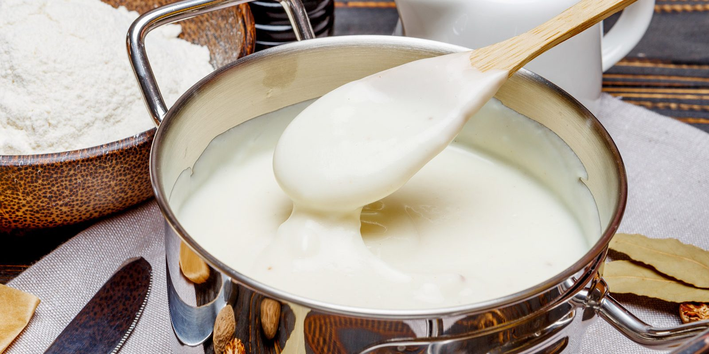

Besciamella
Ingredienti
- 1/2 lt di latte
- 50 g di burro
- 40 g di farina
- Q.B. di sale fino
- Q.B. di noce moscata
Preparazione
1. Sciogli il burro in un pentolino a fuoco basso.
2. Una volta sciolto, aggiungi la farina e mescola continuamente per evitare che si formino grumi.
3. In un'altra pentola, porta il latte a ebollizione.
4. Quando il latte inizia a bollire, unisci lentamente il composto di burro e farina, continuando a mescolare per ottenere una crema liscia.
5. Aggiusta di sale e aggiungi una spolverata di noce moscata a piacere, continuando a mescolare fino a ottenere la consistenza desiderata.